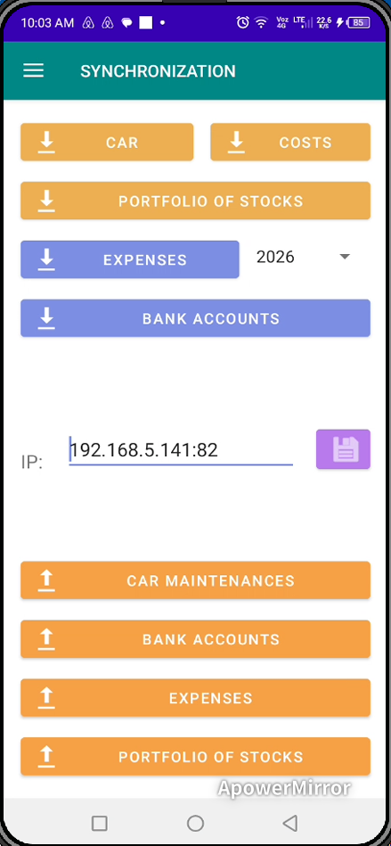
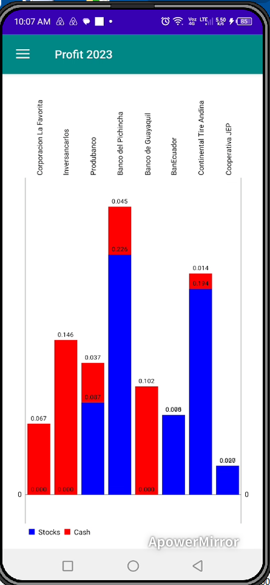

Mobile Login Interface
Secure login screen providing access to the mobile portfolio management environment.

Desktop Synchronization Window
Synchronization module connecting the mobile application with the desktop investment management software.

Tracked Stocks Selector
Spinner interface displaying the list of tracked stocks available for mobile portfolio analysis.

Main Mobile Dashboard
Overview of the mobile application interface, including navigation buttons, financial summaries, and portfolio information.

Dividend Distribution Bar Chart
Bar chart visualization comparing dividends distributed by different portfolio stocks.

Transactions & Holdings Overview
Displays stock purchases, sales, stock dividends received, and the remaining shares currently owned.

Stock Ranking Analysis
Ranking of stocks based on evaluations and scoring models generated by the desktop software.

Market Price vs Intrinsic Value
Comparison between annual average market prices and intrinsic values for tracked stocks.

Simulated Profit Analysis
Chart displaying simulated profits if all portfolio positions were liquidated, based on desktop software simulations.

Dividend Distribution Radar
Radar chart illustrating dividend distributions over multiple years for the selected stock.

Daily Market Price Area Chart
Area chart representing daily market price movements for the selected company.